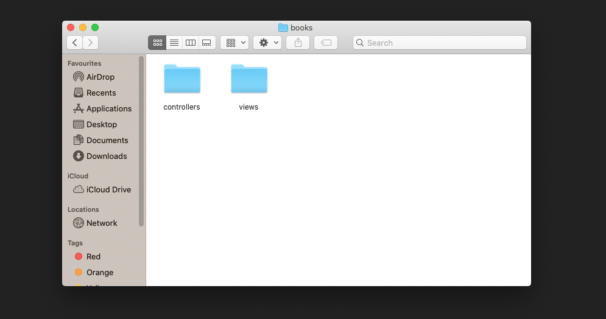
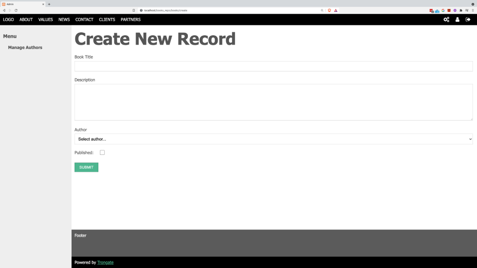

Now, we're going to manually create a new module along with a form. If you're the kind of person who gets bored reading docs then here's a video showing you everything you need to know:
[youtube]{
"headline": "Video Demo",
"info": "In this video I'm going to demonstrate how to manually create a module and then build a form.",
"videoId":"pZ7yONXXg4Y"}
[/youtube]
If you're the kind of person who prefers reading then here's everything that gets covered in the video:
Our manual form building process kicks off with the creation of a new module. Remember, a module is just a folder that contains a bunch of stuff. That's all! In this case, we'll create a module called 'books'. Open your text editor and create a new module called 'books' inside your 'modules' folder.
Then, inside your 'books' module, create a folder called 'controllers' and another folder called 'views'.

Now, we're going to create a controller file called 'Books.php'. Like all Trongate controller files, the filename for our controller file will begin with an uppercase first letter and the file will be stored inside a 'controllers' folder. Also, we'll open this file with a standard PHP class opening.
<?php
class Books extends Trongate {
}
Our form is going to be displayed when we go to the url:
http://localhost/books_repo/books/create
So, now we're going to create a basic 'create()' method. The goal of our create method, initially, is to:
Here's the code:
function create() {
$data["form_location"] = str_replace("/create", "/submit", current_url());
$data["view_file"] = "create";
$this->template("admin", $data);
}Our form is going to contain a dropdown menu that allows users to select an author for each individual book record. To achieve this, we're doing to build a second method onto our controller file. This method will be called _get_author_options(). The goal of this method is to simply build up an array of key, value pairs that can ultimately be passed into our 'create' view file and presented as options from a dropdown menu.
Our _get_author_options() method starts by fetching all of the authors from the 'authors' table, on the database. Here we'll be ordering the authors by 'last_name'.
$rows = $this->model->get("last_name", "authors");We're then going to start building an array of options. We'll initialise our array with an option that has an empty key. This option will have a text value that says, 'Select author...'.
$options[""] = "Select author...";
Then, we're going to loop through our authors records and for each record we're going to create a new (key, value pair) option and add it onto our options array.
foreach($rows as $row) {
$options[$row->id] = $row->first_name." ".$row->last_name;
}Finally, we're going to finish our _get_author_options() method by returning our $options array.
return $options;
COMPLETE CONTROLLER FILE CODE
Now, all we have to do is fetch the 'author_options' from our create() method and pass those options into the 'create' view file. The complete code for our controller file therefore looks like this:
<?php
class Books extends Trongate {
function create() {
$data["form_location"] = str_replace("/create", "/submit", current_url());
$data["author_options"] = $this->_get_author_options();
$data["view_file"] = "create";
$this->template("admin", $data);
}
function _get_author_options() {
$rows = $this->model->get("last_name", "authors");
$options[""] = "Select author...";
foreach($rows as $row) {
$options[$row->id] = $row->first_name." ".$row->last_name;
}
return $options;
}
}
Now, we're going to create a new view file called create.php. This view file should be saved inside the 'views' folder, inside the 'books' module.
The complete code for the view file is as follows:
<h1>Create New Record</h1>
<?php
echo form_open($form_location);
echo form_label("Book Title");
echo form_input("title");
echo form_label("Description");
echo form_textarea("description");
echo form_label("Author");
echo form_dropdown("author_id", $author_options, "");
echo "<div>Published: ";
echo form_checkbox("published", 1, 0);
echo "</div>";
echo form_submit("submit", "Submit");
echo form_close();
If you've followed the instructions on this page, you should end up with a beautiful looking form that looks like this:
